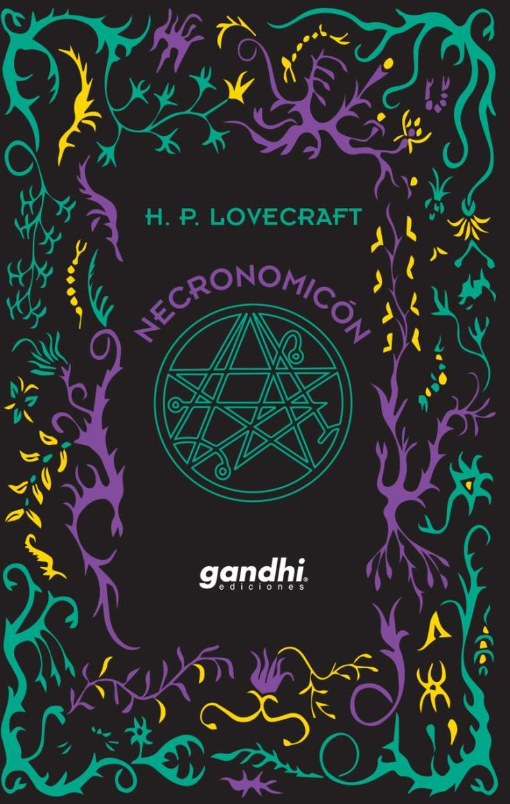

Necronomicón
Alegadamente, o Necronomicon é um grimório onde são descritos numerosos rituais para ressuscitar os mortos, contactar com entidades sobrenaturais, viajar pelas dimensões onde habitam estes seres, trazer de volta à Terra antigas divindades banidas e aprisionadas, etc. É mencionado ainda que a sua simples leitura basta para provocar a loucura e a morte.
Autor: H.P Lovecraft
Gêneros: ficção científica, horror e literatura fantástica.
baixa aqui